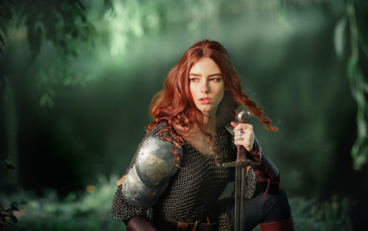
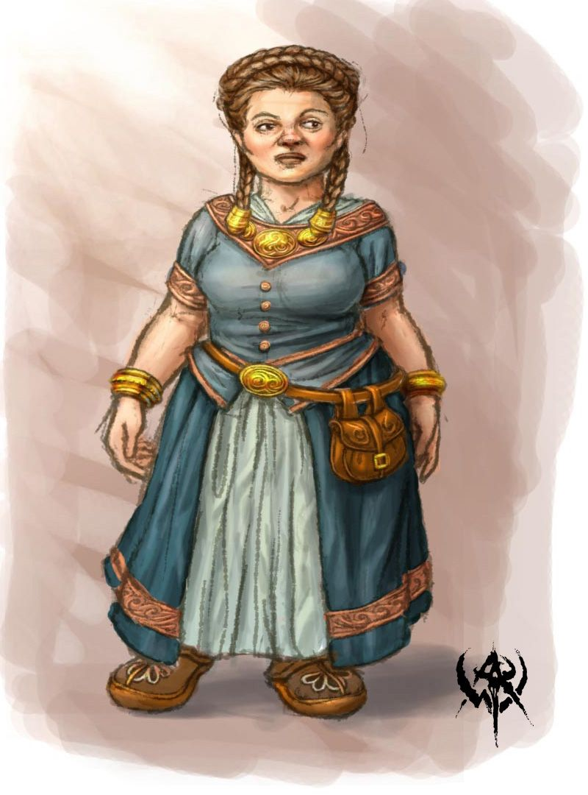
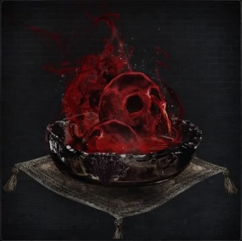

Сесія 4
Загін шукачів пригод:
- Лана (Зенбіріт Текенурдаас, драконороджена-паладинка (2))
- Назар (Гурдріс Хардфордж, дворф-клерик (2))
- Іван (Дюрам Хіґсон, напіворк-варвар (1))
- Ростик (Леврас Жнець, напівельф-чорнокнижник (1))
Пригоди:
 Герої прокинулись в таверні Стоунхіла і за сніданком дізнались від офіціантки Ельзи з гарними очима, що на околиці Фандаліна живе старий шукач пригод Дарен Едермат. По дорозі відбувся візит до магазину Левовий Щит, де гостра на язик і міцної будови Лінен Грейвінд дізналась, що герої знайшли припаси з емблемою гільдії Левових Щитів у гоблінській печері. Після невдалих маніпуляцій з харизмою герої мусили супроводжувати Лінен до печери, аби вона на власні очі переконалась в правдивості слів героїв. Схоже, жінка-воїн запала на Дюрама-напіворка, а от Левраса дико незлюбила.
 В печері загін застав кілька гоблінів, що розкрадали запаси. Як не дивно, гоблінам вдалось дати драпака без жодних втрат. Лінен впевнилась в надійності групи і винагородила героїв 50 золотими за знайдені припаси Левових Щитів. Дорогою назад напали летючі кровопивці, але їх сил не вистачило, щоб нанести шкоду кому-небудь. А чорнокнижник Леврас вирізав серце кровопивці на згадку про подвиг.
В печері загін застав кілька гоблінів, що розкрадали запаси. Як не дивно, гоблінам вдалось дати драпака без жодних втрат. Лінен впевнилась в надійності групи і винагородила героїв 50 золотими за знайдені припаси Левових Щитів. Дорогою назад напали летючі кровопивці, але їх сил не вистачило, щоб нанести шкоду кому-небудь. А чорнокнижник Леврас вирізав серце кровопивці на згадку про подвиг.
По прибуттю в Фандалін Леврас нарешті прикупив такий бажаний бастард. “Я з’єдную цей меч з своїм Патроном” - гордо прорік напівельф, наповнюючи метал темною магією. Лінен зробила таки відчайдушну пропозицію Дюраму, та пропозиція була відкинена, а жінка розчарована.
 Надвечір герої подались таки до Дарена Едермата в його будиночок з яблучним садом. Старий шукач пригод і відставний маршал з узбережжя Дракона знайшов тут спокійне життя, а тепер і гостей. Дарен розповів про проблему з Червоними Плащами і їх лідером Скляним Посохом, про таверну Сплячий Велетень, де головорізи зависають і Тресендарське помістя, де, скоріш за все, мають базу. Сам Дарен не може протистояти злочинцям, а натомість просить героїв навести порядок у містечку, бо місцевий мер, схоже, заляканий бандитами не на жарт. Також старий напівельф розповідає чутки про нежить, яка гналась за золотошукачами біля Криниці Старої Сови. Дарен знає, що руїни - залишки старої вартової вежі древньої магічної імперії Нетеріл, і непокоїться, що там може ховатись небезпечна магія.
Надвечір герої подались таки до Дарена Едермата в його будиночок з яблучним садом. Старий шукач пригод і відставний маршал з узбережжя Дракона знайшов тут спокійне життя, а тепер і гостей. Дарен розповів про проблему з Червоними Плащами і їх лідером Скляним Посохом, про таверну Сплячий Велетень, де головорізи зависають і Тресендарське помістя, де, скоріш за все, мають базу. Сам Дарен не може протистояти злочинцям, а натомість просить героїв навести порядок у містечку, бо місцевий мер, схоже, заляканий бандитами не на жарт. Також старий напівельф розповідає чутки про нежить, яка гналась за золотошукачами біля Криниці Старої Сови. Дарен знає, що руїни - залишки старої вартової вежі древньої магічної імперії Нетеріл, і непокоїться, що там може ховатись небезпечна магія.
 Ночували герої в сіні на фермі Квеллін Олдерліф, мудрої і щедрої хафлінгині. Її непосидючий син Карп, теж в майбутньому великий шукач пригод, розповів про таємний тунель в заростях недалеко від Припасів Бартена, який, схоже, веде в лігво Червоних Плащів. Квелін також порадила свого старого друга-друїда Рейдота як найкраще джерело географічних даних в регіоні, так як старий сходив кожен клаптик тутешніх земель. Останньої зустрічі друїд вирушав до руїн поселення Громодерев’я на захід від Невервінтерського лісу. Вночі Леврас спробував пронести до Карпа серце кровопивці і розказати про життя чорнокнижників, але йому перешкодив Дюрам, вирубавши з одного удару.
Після нетривалих дискусій герої закупились в Бартена і взяли курс на лігво банші Агати. Вночі першого дня дороги на табір здійснили напад орки, які ледь не винищили загін своєю брутальністю. Напіворк Дюрам проявив чудеса витривалості на межі між життям і смертю, але зумів вибратись з безнадійної ситуації. Злагодженими діями і краплею удачі орків було знищено. Леврас продовжив процедурою вирізання сердець, чим сильно занепокоїв клерика Гурдріса та й інших героїв теж.
Наступного дня герої потрапили в гоблінську засідку. З десяток випущених стріл і криві шаблі не розбили бойового духу групи. Жодному гобліну не вдалось втекти, та останній умудрився поставити глибокий шрам на обличчі Зенбіріт. І знову жорстокий допит з ламанням пальців затриманого гобліна від Левраса і швидка смерть від рук праведного Гурдріса.
 Цієї ночі за нічліг було обрано гористу місцевість на півдні від тракту. І як не дивно, ніч знову не пройшла без пригод. Якраз на чергуванні Дюрама на табір напала зграя вовків. Як не старався напіворк вберегти тварин від знищення, герої були невблаганні. Вовчі шкіри було поспішно знято і запаковано в торбу. А Леврас на своєму чергуванні підняв ритуали на новий рівень. Розкладені пентаграмою частини розчленованих тварин повинні були викликати потужного демона і навести прокляття на цю місцину. Та не сталось як гадалось. Сердитий на своїх пекельних покровителів, чорнокнижник вирішив помочитись на ритуальну пентаграму. Тут демон не витримав. Хвиля за хвилею язики зеленого полум’я вдарили по героях, набираючи силу з кожним разом. Шість шалених вибухів - і чорнокнижник лежить непритомним на землі, а герої оглядають свої рани і опіки.
Цієї ночі за нічліг було обрано гористу місцевість на півдні від тракту. І як не дивно, ніч знову не пройшла без пригод. Якраз на чергуванні Дюрама на табір напала зграя вовків. Як не старався напіворк вберегти тварин від знищення, герої були невблаганні. Вовчі шкіри було поспішно знято і запаковано в торбу. А Леврас на своєму чергуванні підняв ритуали на новий рівень. Розкладені пентаграмою частини розчленованих тварин повинні були викликати потужного демона і навести прокляття на цю місцину. Та не сталось як гадалось. Сердитий на своїх пекельних покровителів, чорнокнижник вирішив помочитись на ритуальну пентаграму. Тут демон не витримав. Хвиля за хвилею язики зеленого полум’я вдарили по героях, набираючи силу з кожним разом. Шість шалених вибухів - і чорнокнижник лежить непритомним на землі, а герої оглядають свої рани і опіки.
 Першу половину дня Леврас провів на плечах Дюрама, а підвечір група таки зуміла дістатись до руїн поселення Кролячої Ягоди, яке варвари знищили багато років тому. Дорога в ліс вивела героїв прямо до хижини банші Агати. Дух ельфійки прийняв срібний гребінь з рук Зенбіріт і відповів на запитання сестри Гараель. Виявляється, більше ста років тому Агата продала легендарну книгу заклять Боуджентла некроманту на ім’я Тсернот з міста Іріебор. Подальша доля книги банші невідома.
Завдання виконано, пора шукати місце на нічліг, а чорнокнижник Леврас знову снує павутину планів з вторгнення своїх потусторонніх патронів в цей світ.
Підсумки:
- Лана (Зенбіріт Текенурдаас, драконороджена-паладинка (2)): 460+330=790/900ХР
- Назар (Гурдріс Хардфордж, дворф-клерик (2)): 320+330=650/900ХР
- Іван (Дюрам Хіґсон, напіворк-варвар (1)): 230+330=560/300ХР => 2 рівень
- Ростик (Леврас Жнець, напівельф-чорнокнижник (1)): 100+330=430/300ХР => 2 рівень